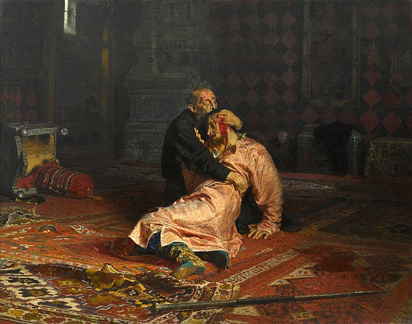

краткая иформация для тех,
кто не готов к зачету по истории искусств, но решил почитать о том, что мне нравится
Вернуться на главную страницу
Иван Грозный и сын его Иван 16 ноября 1581 года
Сюжет
"Иван Грозный и сын его Иван 16 ноября 1581 года" написал Репин в 1883 - 1885. Нарисована картина в стиле реализм, а сюжет построен на основе истории. Иван Грозный в порыве гнева пробил висок своего сына жезлом и мы видим, как к нему приходит осознание. Князь сидит на полу и держит руками голову сына. На его лице изображен ужас и отчаяние. Интересно, что позировал Ивана Грозного простой рабочий, но то как Репин фантастически передает безумие на лице главного героя картины завораживает.
История картины
Во время написания картины художник часто не мог смотреть на свою работу, она его пугала. После написания картины ее почти сразу запретил выставлять император Александр III. Картина подверглась цензуре, но несмотря на это ее выкупил Павел Третьяков и сейчас она хранится в свободном доступе в Третьяковской галерее.